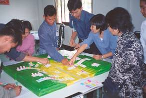

|
SugarRice, un jeu
de rôles sur les changements d'usage des terres dans
les rizières hautes du nord-est de la Thaïlande
N.
Suphanchaimart, F. Bousquet, I. Patamadit
C. Wongsamun, G. Trébuil
 Motivation de
la création
Des universitaires de Khon Kaen travaillant de longue
date avec les villageois souhaitaient mieux comprendre
les déterminants et les conséquences (sur la sécurité
alimentaire familiale, les revenus, les réseaux
commerciaux) de la colonisation récente des rizières
hautes par la canne à sucre, culture de rente
industrielle principale de la région. C'est à leur
initiative et avec la participation de leurs étudiants
que des ateliers de modélisation participative ont été
conduits dans plusieurs villages au cours desquels la
technique du jeu de rôles était utilisée comme outil de
vérification et d'enrichissement du modèle conceptuel
initial, ainsi que de co-conception d'un modèle SMA
simulant rapidement des parties. L'objectif était
d'aboutir à une représentation partagée de la dynamique
de changement d'utilisation des terres à partir de
laquelle différents scénarios de diversification
agricole pourraient être évalués collectivement.
Description et spécificités
La première matinée est consacrée à une séance de jeu
selon les ressources, l'organisation de l'espace et les
règles d'utilisation des terres comprises par les
enseignants-chercheurs organisateurs. Une explication de
20-30 minutes suffit avant de démarrer. Chaque joueur
vient placer ses cultures sur ses parcelles
matérialisées sur le modèle 3D installé au centre de la
pièce et en fin d'année il solde ses comptes au " marché
". Les interactions sociales entre eux sont laissées
libres. Après 2 tours de jeu, le modérateur demande aux
joueurs de critiquer le jeu et de proposer des
améliorations, puis le jeu reprend. Lors du déjeuner les
commentaires vont bon train. L'après-midi, de nouveaux
changements sont discutés, insérés dans le jeu et une
nouvelle partie jouée selon les nouvelles règles
collectivement agréées. Le lendemain, tous les joueurs
sont interviewés individuellement (critique des
différents aspects du jeu, explication de certaines
décisions, discussion sur son utilité et les suites à
donner, quelles parties prenantes inviter ? Etc.). Le
troisième jour, le modèle SMA jouant le jeu est présenté
aux joueurs. Des scénarios futurs sont discutés et
simulés en vue de leur évaluation collective.
Mise en oeuvre
Les ateliers étaient organisés avec les autorités
locales, aux niveaux villageois ou du sous-district
(canton). Une fois mis en confiance, les paysans
suggéraient quels autres protagonistes inviter à
l'atelier suivant (sucrerie, décideurs des prix du
sucre, etc.). Pas de suivi des effets.
Références
- Suphanchaimart N., Bousquet F., Wongsamun C.,
Patamadit I., Panthong P. et G. Trébuil. 2003.
Companion modeling to understand the expansion of
sugarcane in rainfed lowland paddies of upper
northeast Thailand. Poster présenté à la conférence de
l'UMR SAGERT " Organisation spatiale et gestion des
ressources et des territoires ruraux ", CNEARC,
Montpellier, France, 25-27 février 2003.
- Suphanchaimart N., Bousquet F. et G. Trébuil. 2004.
Companion modeling to understand the expansion of
sugarcane in rainfed lowland paddies of upper
northeast Thailand. Vidéo clip (10mn), IRRI-CIRAD-DOA
Project, Bangkok, Thaïlande et unité de recherche
GREEN, CIRAD, campus de Baillarguet, Montpellier.
Pour en savoir plus, contactez l'auteur.
|
|